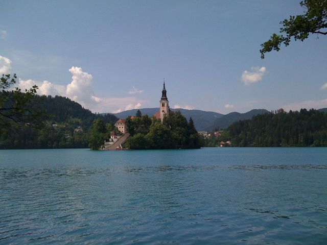
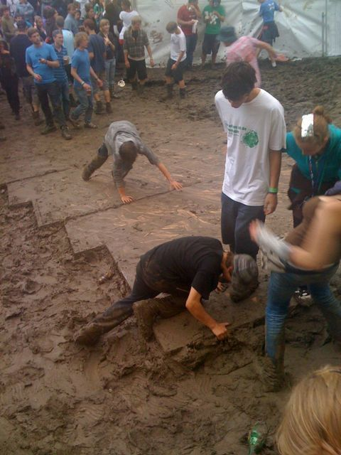
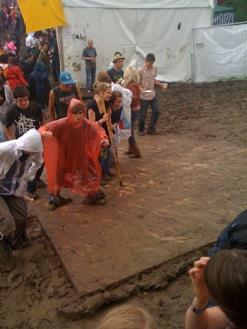
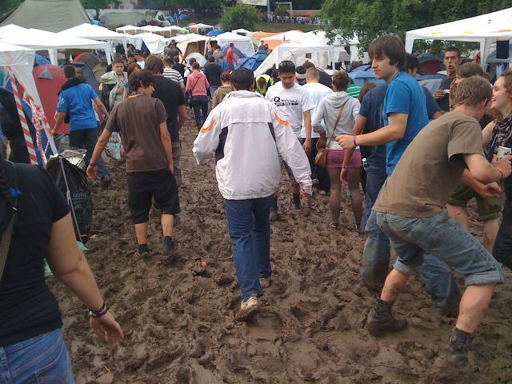
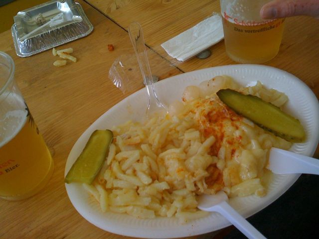
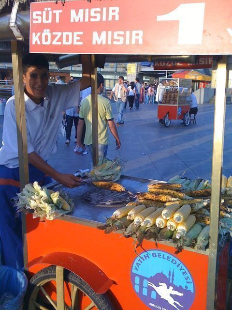
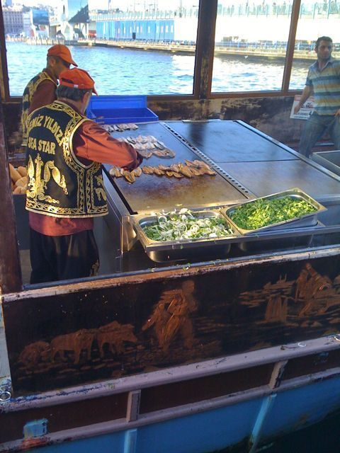
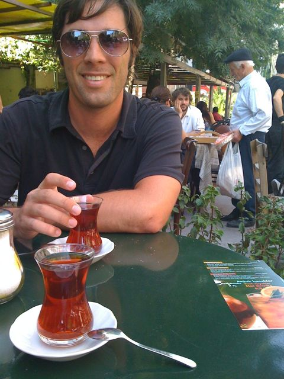

Posted: July 3rd, 2009 | Author: Carrie Knittel | Filed under: Wedding | Tags: lake bled, slovenia | Comments Off
Here are a few pictures of Lake Bled, Castle Bled and the church on the island in Lake Bled.
The stairs in the one photo lead up to a church that sits on the island. When there is a wedding at the church, the groom must carry the bride up the stairs to prove he’s fit for marriage! Carter offered to carry me up, but since he had just rowed us to the island I let him off the hook.
We stayed in a private room in a hostel outside of Bled that was run by a really sweet family. For 6 euros Mama whipped us up a delicious Slovenian dinner.





Posted: July 3rd, 2009 | Author: Carrie Knittel | Filed under: Wedding | Tags: interlaken, switzerland | Comments Off
The second and final of our adventure activities in Interlaken was paragliding, which I loved. At the start I could tell it was going to be a whole other ball of wax compared to canyoning. With canyoning, panic set in during the drive to the canyon, as three of our beefy and faux-hawked Swiss guides negotiated hairpin turns and sang along to Offspring.
For paragliding, I was a little nervous as we drove up the mountain to an elevation of about 4000 feet, but otherwise quite calm as we chatted with our mellow pilots (as we’re complete novices, it was a tandem flight) and signed a contract that relieved them of all resposibility in case we plummeted from the sky.
In the van on the way up, we each picked our pilot. Carter picked a pilot named Bert because he resembled Jimmy McNulty from The Wire. I placed my life in the hands of Fabrice, even though he was sitting in front and I could only see the back of his head. Of the other pilots I could see and rejected, one looked too green, and the other looked like a crazy guy I used to work with. After this very scientific selection process, we arrived at the take off field and got strapped into our gear.
I was the first in our group to fly! With the chute laid out in back of us, Fabrice strapped the back of my harness to the front of his gear (I’m totally setting someone up for a zinger here). Then we started jogging down an incline, and it really couldn’t have been more than 15 or so paces before we took flight.
Fabrice would find some thermals and we’d float, making lazing circles with an amazing view of the Alps and Interlaken. As we got closer to the landing field, Fabrice pulled out some tricks, and it felt really exhilerating, like being on a untethered rollercoaster. After about 15 minutes of flight, we touched down gently. I wish I could post some pics now, but I didn’t bring my precious iPhone up with me.
We’ve been on terra firma ever since, spending a day in Lake Bled and arriving today in Ljubljana, Slovenia. Next stop, Croatia.
Posted: July 2nd, 2009 | Author: Carter Rabasa | Filed under: Wedding | Tags: bled, germany, slovenia, switzerland | Comments Off
Catching the night train from Munich to Lake Bled (Slovenia) was a harrowing experience. I’m fairly sure that I sprinted (full out) a cumulative mile as I changed money, located trains, and tracked down information booths. Multiple times we were told contradictory things about which train would get us to Bled, most of the time getting the response “Bled?”
We finally found the right car and secured a sleeping compartment. We were joined by a nice older lady who spoke no English but did help make Carrie’s bed. After paying the 40 euro surcharge I clambered into my top bunk and passed out.
We woke up just a short while before the train would arrive in Bled. Which was great. But the conductor still had our Eurail pass. Which was bad. Those passes are not stored in a database, are not reproducable, and are basically 24 hundred dollar bills with our names scribbled on them. I frantically looked around for him and just as we were about to have to disembark, he emerged from a sleep car rubbing his bed head. And all was right with the world and we had arrived in Slovenia.


Posted: July 1st, 2009 | Author: Carter Rabasa | Filed under: Wedding | Tags: hiking, switzerland | Comments Off
First, sorry if these posts aren’t strictly chronological. Offline post composition is both a blessing and a curse if you’re just motivated enough to start a post but too lazy to finish one.
When we were in Interlaken (two countries ago), we took a train over to the Alps and after a cool gondola ascent began a short hike up towards the tallest mountain in Europe (Jungfrau). It was a leisurely hike along a well paved path and after a couple of hours we were 1200 meters from the peak. We inquired about the train that takes people to the observatory on the top of the mountain and found out it was about $80 each.
As we hiked away, I told Carrie how great I thought our view was from down here.
Posted: July 1st, 2009 | Author: Carter Rabasa | Filed under: Wedding | Tags: interlaken, switzerland | Comments Off
“Make sure your wetsuit is rolled over your water boots… unless you’re from Texas.”
This was a joke repeated in different forms by our canyoning guides as we prepared for our trip. I grew up in Virginia telling West Virgina jokes, so now the shoe is on the other foot.
Our primary guide was a giant named Sebastian. He was about 6’3″ and looked like a young Magnus Ver Magnusson. This guy was a badass. He would leap headfirst off a rock ledge, flip in the air, and land precisely where he needed to in order to avoid being pulverized by rocks under the river. We’re talking 3-point accuracy.
So, as you can gather, Carrie and I went canyoning. It’s sort of like white water rafting, minus the rafts and plus a bunch a hairy jumps and slides down waterfalls. It was… extreme. We spent about 5 hours making our way through this canyon, being told where to jump, where to land, and how to slide.
I would usually jump first, into these deep and cold pools of water, with shockingly strong currents. I’d turn around, treading water or clinging to a wall and wait for Carrie to arrive. She would splash down and then the bouyancy of her life vest would bob her up, where an expression of pure panic would be plastered on her face. Classic!
Anyway, the trip concluded with a hearty meal of sandwiches, chips and beer. The beer was abundant, so I polished off three by the time we got back to the hostel (road beers are ok). I napped like a baby that evening.
Posted: June 28th, 2009 | Author: Carter Rabasa | Filed under: Wedding | Tags: interlaken, switzerland | Comments Off
Some pics from our home for the next 3 nights: Balmer’s! The last 2 pics were taken from the skylight (!) in our room.


Posted: June 28th, 2009 | Author: Carter Rabasa | Filed under: Wedding | Tags: istanbul, music, turkey | 1 Comment »
There is something deeply ironic about being outblogged by Carrie on this trip thus far. I think I’ve created a monster. But, if it wasn’t for her, there wouldn’t be much to read.
When I last left off I had posted some pictures from our fabulous hotel in Sultanhamet, Istanbul. It was kind of like having a view of the French Riviera, the Eiffel Tower and the Vatican rolled into one. While it was nice to experience these wonders of Turkey, it was pretty awesome when my buddy Burak and his cousin Emrah whisked us away to where the fun is: Taksim.
Taksim has a huge street that is closed to traffic and is rife with shops, bistros, bars and street vendors. You see these streets in most major cities in Europe and they’re awesome. Just a mass of people moving enjoying some shopping, food and nargile (hookah) at a human pace.
After some walking, we settled down to eat some authentic Turkish cuisine at a really nice restaurant next to the Galata Tower. Burak and Emrah ordered a bunch of mezes to share, and we enjoyed every bite. Wrapping things in grape leaves was a great idea.
Now things get fun. Burak suggests we go check out the One Love Festival, a weekend music fest featuring electronica. We pile into Emrah’s Mini and he takes off like a bat out of hell. A few near-death experiences later and he’s paying some guy to move a trash bin so that we can park on the street next to the festival. A few Lira later and we’re just in time to catch the headliners: Royskop! It was a cool show: not too crowded, close to the stage, and just long enough to satiate my curiosity in electronic music.
Afterwards, we headed over to Emrah’s for some drinks. Carrie and I had whiskey, a delicious 12-year variety. It was nice to get away from the bars and just chill-out. Emrah’s flat was right in Taksim and was great. 3 bedrooms, high ceilings and a long balcony for something like $1200/month. Good deal!
Anyway, here’s to Burak and Emrah. Turkish hospitality at its finest!
Posted: June 27th, 2009 | Author: Carrie Knittel | Filed under: Wedding | Tags: st gallen, switzerland | Comments Off
Holy shit. Carter and I are at the OpenAir music festival in St Gallen, Switzerland, and it’s complete muddy mayhem. Never seen anything like it.
When I first realized the mess we were about to enter, I took a moment to myself to accept that I was about to get really, really dirty. This can be hard to accept when you are living out of a backpack for 7 weeks and each clean item of clothing is precious. But once I accepted it, and 3 beers (and 1 brat) later, I’m feeling pretty good.
We just saw a Swiss/French rapper called Stress, and Nick Cave is on stage now. After that, NIN.
Where we’re sitting, we have a good view of the stage, and of a muddy and very slippery ramp directly in front of us where we can watch and laugh at the drunk people struggle and fall as they make their way up. As you can can see in the photos, I’m sitting next to a passed out guy who’s starting to foam at the mouth a bit.
There was a cool moment between sets when the song Billie Jean came on and there was a big roar from the crowd.












Posted: June 25th, 2009 | Author: Carrie Knittel | Filed under: Wedding | Tags: istanbul | Comments Off
I think eating from food carts is one of the best and cheapest ways to really get to the gut of a city’s cuisine.
On the west side of the Bosphorus, near the Galata Bridge, there are three docked wooden boats serving fish sandwiches. It sounds pretty mundane until I add in the fact that the boats are pitching back and forth with the river’s swells. Somehow these guys are able to keep their balance, not vomit, manage a grill full of fish, and crank out sandwiches that locals and tourists alike gobble up while sitting at little tables.
The sandwiches are served on a roll, with lettuce, herbs and sweet onions. The fish is definitely on the fishier side, which explains the bottles of lemon juice and sea salt on each table. And you’ve gotta watch out for those fish bones. I can’t say that my mouth is watering for another one, but for just 4 lira, it was a really cool experience.
Afterward Carter grabbed an ear of grilled corn from one of the many corn vendors around town. We each just took a couple bites of the charred and dry corn, and then spent a good few minutes picking it out of our teeth. Not so tasty, but for just 1 lira it was worth a try. And once we started into an ice cream cone from yet another vendor, the corn was all but forgotten.


Posted: June 22nd, 2009 | Author: Carrie Knittel | Filed under: Wedding | Tags: istanbu, turkey | Comments Off
Drinking turkish tea in Cihangir, the artsy neighborhood in Istanbul.

{kind=link}
{kind=link}
{kind=link}
{kind=link}
{kind=link}
{kind=link}
{kind=link}
{kind=link}
{kind=link}
{kind=link}
{kind=link}
Recent Comments